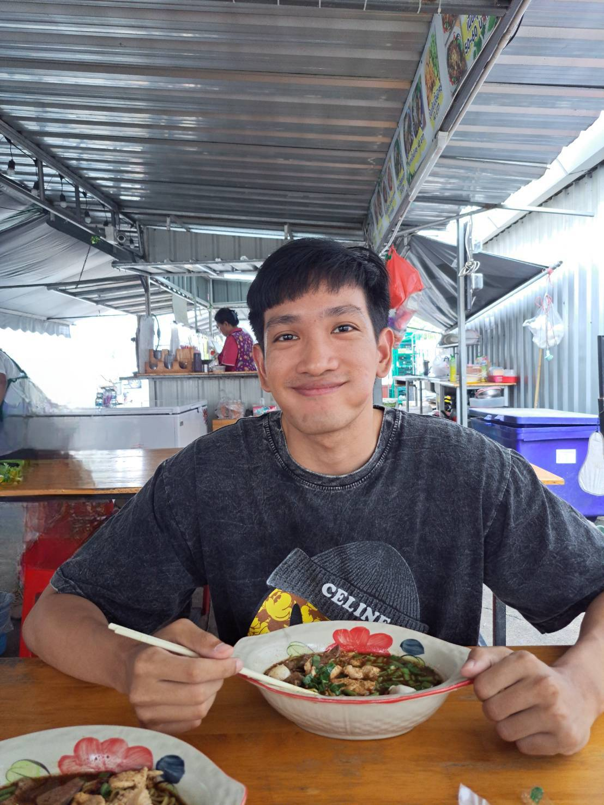

Sirawitch Khosakul

About me
Most experience is about customer service, but for now I am looking for new career path for difference experience and challenging
Experience
- Shiro Neko Sushi Japanese restaurant (Manager)
2020 - Present
- Supervise all operations within the restaurant
- Take care of operational responsibilities.
- Fard Yum Isaan restaurant (Manager)
2018 - 2020
- Take care of operational responsibilities.
- Phuket Marriott Resort and spa, Naiyang Beach
2018 - 2018
- Waiter, serve, bartender, events, service.
Education
- Ramkamheng University
- Bachelor's degree in English, from the Faculty of Humanities 2019-2023
- Stamford University
- Certificate of the foundation of English
2015-2018
Skills
- Customer service
- Organizational skills
- Basic Html
- Basic Microsoft Office
Other
Contact me
© Sirawitch k. All rights reserved.